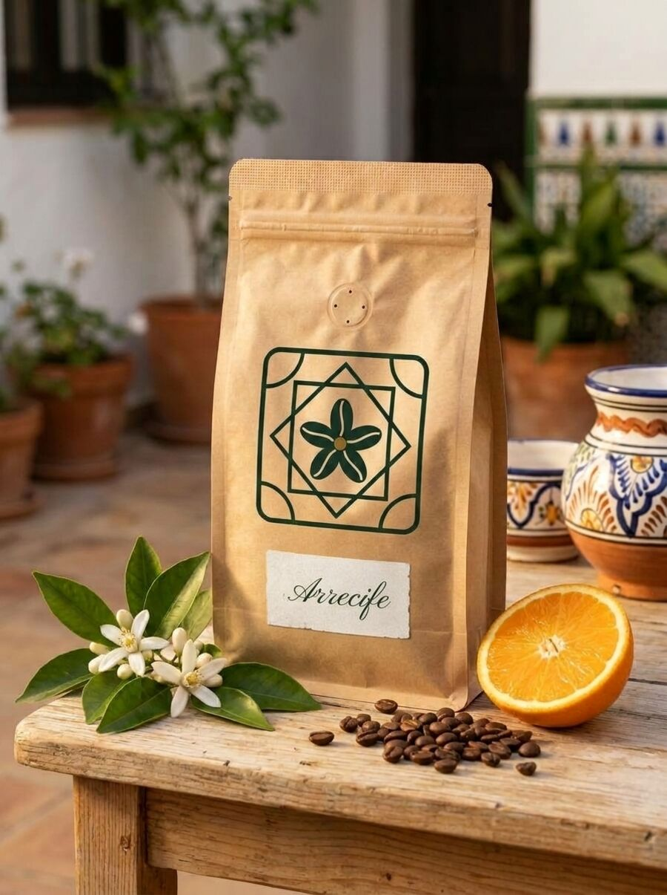
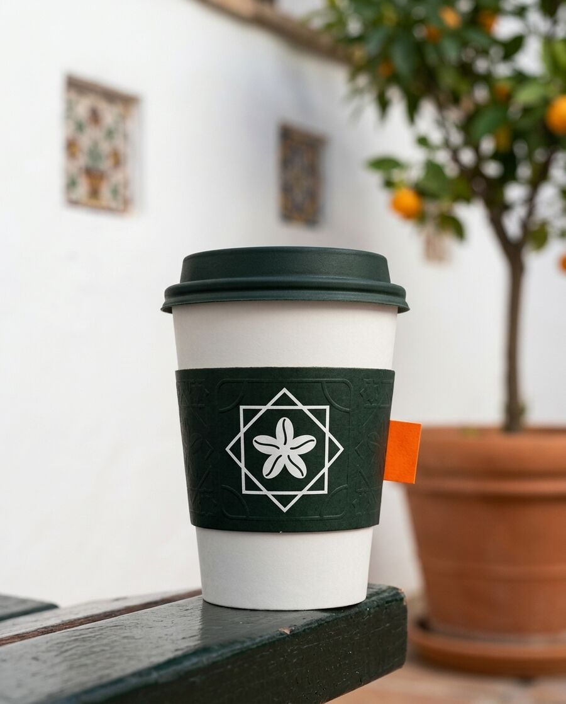
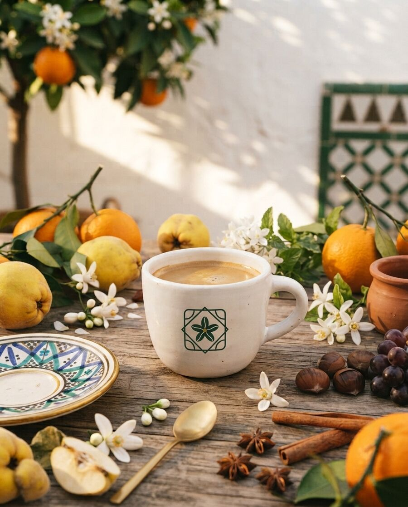
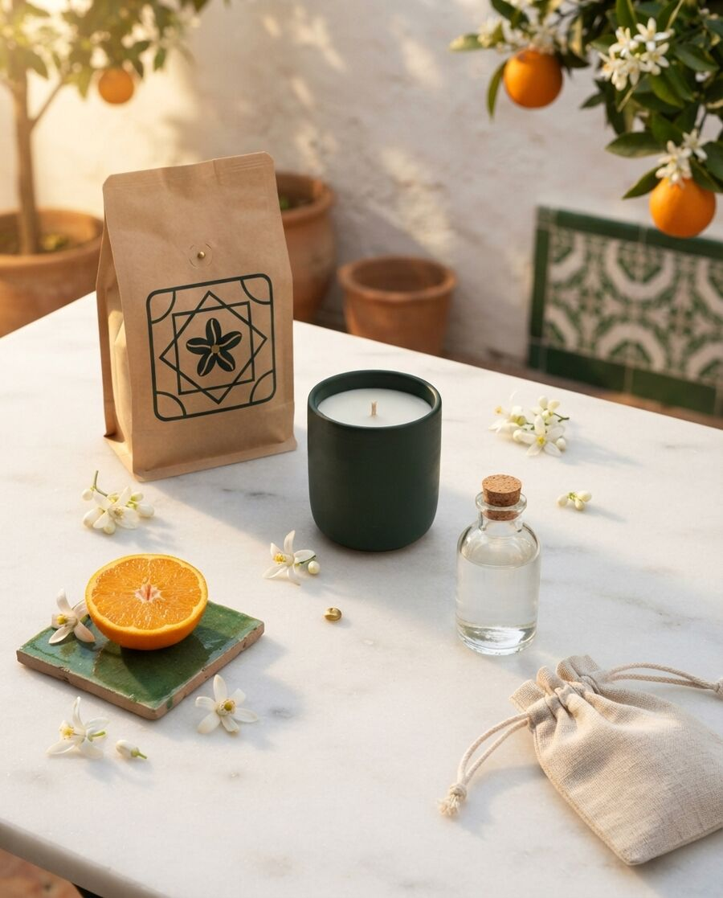

Café de temporada
En grano o molido, 250 g y 1 kg, con su etiqueta de temporada.
Disponible el 4 de marzoHuele primero. Sevilla viene detrás.
Lo llamamos maridaje aromático: un café de especialidad de origen y un aroma andaluz que lo acompaña y despierta sus notas.
Cafés de origen de Etiopía, Kenia, Colombia o Brasil, según la temporada.
Con el café llega un pozo de cerámica con el aroma de la temporada. Destápalo y huele.
El aroma prepara el paladar: el café sabe distinto, y lo notarás.
¿Con prisa? El café para llevar lleva una lengüeta con el aroma de la temporada. Dóblala, huele y bebe: el ritual en diez segundos.


Nuestra carta, el aroma del local y los productos para casa cambian cuatro veces al año.
Durante dos siglos, casi todo lo que llegaba del Nuevo Mundo a Europa entraba por el Guadalquivir. AZARA recupera ese papel de puerta del mundo: los cafés de distintos orígenes llegan a un patio andaluz, donde los reciben la luz dorada, la cerámica artesanal y el olor a azahar.
Nuestro café lo tuesta El Hombre Pez, en Sevilla. Y el nombre lo dice todo: AZARA viene de azahar, la flor del naranjo que perfuma Sevilla cada primavera.
Café en grano o molido, aromas y cerámica hecha a mano en Andalucía.

En grano o molido, 250 g y 1 kg, con su etiqueta de temporada.
Disponible el 4 de marzo
Velas, agua de azahar y saquitos con los aromas del calendario olfativo.
Disponible el 4 de marzoRecibe el café de cada temporada con su aroma, cuatro veces al año. Cancela cuando quieras.
AvísameAbrimos el jueves 4 de marzo. Apúntate a la lista de espera y tu primer café de primavera corre de nuestra cuenta.